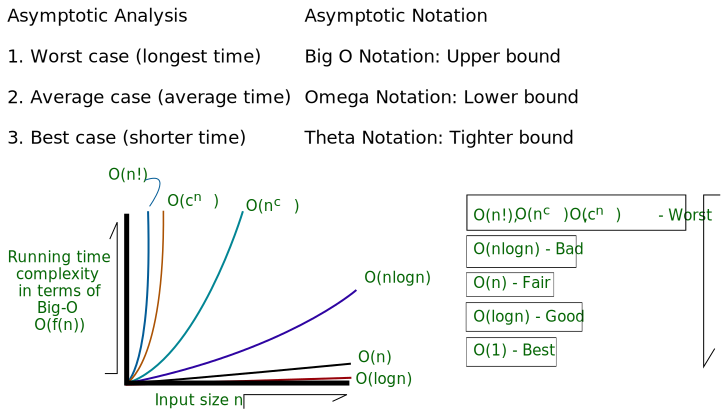
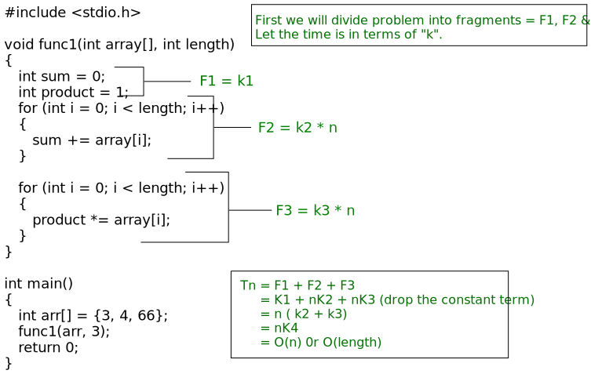
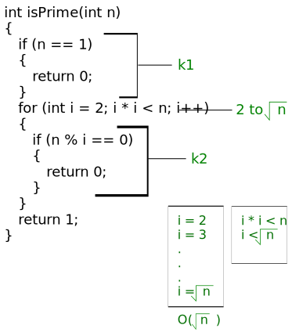
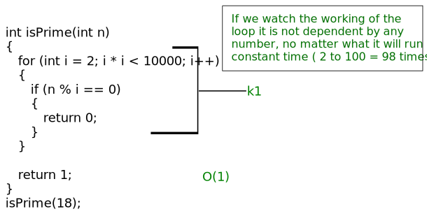

Algorithm Basics
- Algorithm: An algorithm is the well defined list of steps to solve any particular problem.
- It is a finite set of instructions which perform a specific task using
computational manner.
Characteristics
- Input ⇒ An algorithm should take finite number of inputs.
- It is essential for any algorithm before starting.
- Input should be given to it initially before the Algorithm begins.
- Output ⇒ An algorithm must give at least one required result from the given set of
input values. These output values are known as the solution to a problem.
- Definiteness ⇒ Each step should be unique
- No step should be repeated
- Each step must be clear and precisely defined.
- Finiteness ⇒ It means algorithm should be terminated after a finite number of steps.
- Also, each step should be finished in a finite amout of time.
- Correctness ⇒ Output should be correct.
Types of algorithm
- Sequential algorithms are a type of algorithm that executes a set of instructions
in a fixed order, one after the other.
- Conditional algorithms are a type of algorithm that executes different sets of
instructions based on certain conditions.
- Looping algorithms, also known as iterative algorithms, are a type of algorithm
that repeats a set of instructions multiple times until a certain condition is met.
Example
Algorithm to swap two numbers without using third variable ↓
step 1. input a and b
step 2. a = a + b
b = a - b
a = a - b
step 3. print a and b
Algorithm to find largest number in an array ↓
step 1. input size
step 2. input elements in an array arr[size]
step 3. largest = arr[0] and i = 0
step 4. repeat step 5 while i <= size
step 5. if(arr[i] > largest)
largest = arr[i]
end of if
i = i + 1;
step 6. print largest
Algorithm to delete an element from an array ↓
A is an Array
pos is the location of the element to be deleted
N is the size of the array
E is the element to be deleted
deletion(A, pos, N)
step 1. E = A[pos]
step 2. for i = pos to N - 1 repeat step 3
step 3. A[i] = A[i+1]
end of for loop
step 4. N = N - 1
Algorithm to reverse an character array ↓
S is the character array
L is the length of the character array
start is the pointer pointing to first element
end is pointing to last element
swap(S, L)
step 1. repeat step 2 while start < end
step 2. temp = S[start]
S[start] = S[end]
S[end] = temp
start = start + 1
end = end - 1
step 3. print S [reversed character array]
Algorithm Complexity
Algorithm complexity refers to the amount of time and /or space requried by an algorithm to solve a
problem. It is a measure of how efficient an algorithm is, and it is typically expressed as a function
of the size of the input.
There are two types of algorithm complexity:
- Time complexity: This refers to the amount of time an algorithm takes to solve a problem, as a
function of the size of the input.
- The time complexity is usually measured in terms of the number of operations or steps the
algorithm takes.
- Space complexity: This refers to the amount of memory an alogrithm requiers to solve a problem, as a
function of the size of the input.
- Space complexity is usually measured in terms of the amount of memory required for the
input, the output, and any additional storage required by the algorithm
Both time and space complexity are important factors to consider when analyzing the performance of an
algorithm. A good algorithm should have a low time and space complexity, meaning that it should be able
to solve a problem quickly and with minimal use of memory. On the other hand, a poor algorithm may have
a high time and space complexity, which can lead to slow performance or even failure to solve the
problem for large input sizes.
Efficiency of Algorithm
- Time and space are two major measures of the efficiency of an algorithm.
Example:
A B
time 10 sec 15 sec
space 40 mb 13 mb
Algorithm A is more efficient tham B
A B
time 10 sec 10 sec
space 15 mb 3 mb
Algorithm B is more efficient tham A
Time-space trade-off
- S ∝ 1 / T
- Time-space trade-off is a concept in computer science that involves making a choice between using
more time to execute an algorithm or using more space to store data in order to optimize the overall
performance of the algorithm.
- This trade-off between time and space complexity is often influenced by the specific requirements of
the problem being solved and the available resources. For example, in a system with limited memory,
it may be necessary to prioritize space efficiency over time efficiency to ensure that the algorithm
can run at all. In contrast, in a system with abundant memory, it may be more practical to
prioritize time efficiency over space efficiency to achieve faster performance.
- In general, the goal of time-space trade-off is to find the optimal balance between time and space
complexity for a given problem, taking into account the available resources and the specific
requirements of the problem being solved.
Time Complexity and Space complexity of an Algorithm
Criteria for measurement
- Two criteria are used to judge algorithms:
- Time complexity
- Space complexity
Space complexity of an algorithm is the amount of memory it needs to run to completion.
Time complexity of an algorithm is the amount of CPU time it needs to run to completion.
Factors of time and space complexity
Time Space
- Operations - Variables
- Comparisons - Data structures
- Loop stuff - Allocations
- Pointer references - Funtion call
- Function calls to outside
Time complexity of Algorithm
- Time complexity of an algorithm is the amount of time (or the number of steps)
needed by a program to complete its task (to execute a particular algorithm.)
- The time taken for an algorithm is comprised of two times:
- Compilation time
- Run time
- Compile time
- Compilation time is the time taken to compile an algorithm.
- While compiling it checks for the syntax and semantic errors in the program and
links it with the standard libraries.
- Run time
- It is the time to execute the compiled program.
- The run time of an algorithm depend upon the number of instructions present in the
algorithm.
- Note that run time is calculated only for executable statements and not for
declaration statements.
Types of Time Complexity
- Time complexity of an algorithm is generally classified into three types.

Example - sum of n numbers ↓
step 1. input n
step 2. result = 0, i = 1
step 3. repeat step 4 while i <= n
step 4. result = result + i
i = i + 1
step 5. print result
- The time complexity of this algorithm can be calculated by counting the number of operations
1 to n.
- Here the time complexity of the algorithm is O(n), since the running time increases linearly
with the size of the input.
Space complexity
- Space complexity is a measure of the amount of memory space required by an algorithm to solve a
problem.
- It is typically expressed in terms of the amount of memory space used by an algorithm in
relation to the input size. In other words, it is the amount of memory used by an algorithm to
store the data structures and other variables used during the execution of the algorithm.
- To calculate the space complexity of an algorithm, we can use the Big O notation, which
expresses the upper bound of the growth rate of the space used by the algorithm. For example, if
an algorithm has a space complexity of O(n), it means that the amount of space used by the
algorithm grows linearly with the input size. Similarly, if an algorithm has a space complexity
of O(n^2), it means that the amount of space used by the algorithm grows quadratically with the
input size.
Asymptotic Analysis and Notations
- Asymptotic analysis of an algorithm refers to
defining the mathematical boundation/framing of its run-time performance.
- Using asymptotic analysis, we can very conclude the best case, average case, and worst case
scenario of an algorithm.
- Asymptotic analysis refers to computing the running time of any operation in mathematical
units of computation.
Big O Time Complexity Examples
O(1): Constant Time
- When your algorithm is not dependent on the input size n, it is said to have a constant time
complexity with order O(1).
- This means that the run time will always be the same regardless of the input size.
- Examples:
- Accessing Array index (int a = Arr[5];)
O(n): Linear Time
- When the running time of an algorithm increases linearly with the size of the input.
- This means that when a function has an iteration that iterates over an input size of n, it is
said to have a time complexity of order O(n).
// factorial program
int calcFactorial(int n)
{
int ,factorial = 1, i;
for(i = 0; i <= n; i++)
{
factorial = factorial * i;
}
return factorial;
}
- The fact that the runtime depends on the input size means that the time complexity is linear
with the order O(n).
Here the programs like inserting, printing array elements have the O(n) complexity.
O(n2): Quadratic Time
- When there is nested iteration, meaning having a loop in a loop and inner loop is dependent on
outer loop, here the time complexity is
quadratic, which is horrible.
- A perfect way to explain this would be if you have an array with n items. The outer loop will
run n times, and the inner loop will run n times for each iteration of the outer loop, which
will give total n2 prints. If the array has ten items, it will print 100 times
(102).
O(log n): Logarithm Time
- This is similar to linear time complexity, except that the runtime does not depend on the input
size but rather on half the input size.
- When the input size decreases on each iteration or step, an algorithm is said to have
logarithmic time complexity.
- Certain divide and conquer algorithms based on linear functionality.
- This method is the second best because programs run for half the input size rather than the full
size. After all, the input size decreases with each iteration.
- A great example is binary search functions, which divide your sorted array based on the target
value.
// binary search
int binarySearch(int arr[], int size, int target)
{
int low = 0;
int high = size - 1;
int mid;
while(low <= high)
{
int mid = (low + high)/2;
if(arr[mid] == target)
{
return mid;
}
if(arr[mid] > target)
{
high = mid - 1;
}
else
{
low = mid + 1;
}
}
return -1;
}
O(n log n)
- Examples:
- Merge sort
- Heap sort
- Quick sort
How to Calculate Time Complexity of an Algorithm
- Drop the constants:
- Anything you might think is O(kn) (where k is a constant) is O(n) as well. This is
considered a better representation of the time complexity since the k term would not affect
the complexity much for a higher value of n.
- Drop the non-dominant terms:
-
Anything you represent as O(n^2+n) can be written as O(n^2). Similar to when non-dominant
terms are ignored for a higher value of n.
- Consider all variables which are provided as input:
- O(mn) and O(mnq) might exist for some cases.
- In most cases, we try to represent the runtime in terms of the inputs which can even be more
than one in number. For example, The time taken to paint a park of dimension m*n → O(kmn) →
O(mn)
Practise questions
1. Find the time complexity of the func1 function in the program shown below ↓

3. Find the complexity of the following code which tests whether a given number is prime or not?

4. What is the time complexity of the following snippet of code?
